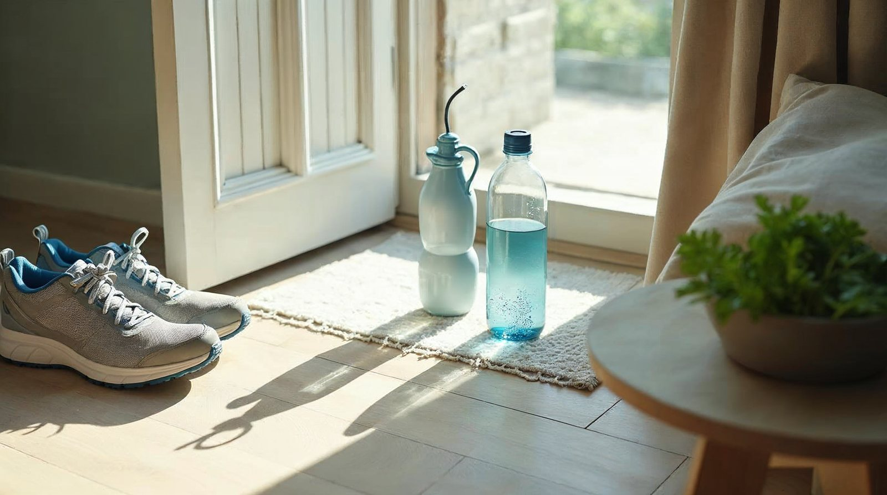

이종호 한의사 감수좋은꿈참사랑한의원 대표원장 (한의사 면허번호 19769)발행 2026-11-26 · 수정 2026-11-26
이 글의 차례
점심시간, 회사 책상에서 검진 결과를 휴대폰으로 열어 봅니다. 복부 초음파 칸에 '경도 지방간'이라고 적혀 있습니다. 배가 아픈 적도, 피곤해서 쓰러질 것 같았던 적도 없는데 말이지요. 오늘 저녁 회식 자리가 갑자기 조금 신경 쓰입니다.
지방간은 간세포 안에 지방이 지나치게 쌓인 상태로, 대개 아무 증상이 없어 검진에서 처음 알게 되는 경우가 많습니다. 먼저 검진 기관과 내과의 재검 안내를 따르시고, 술과 단 음료, 늦은 저녁, 잠, 그리고 드시는 약과 영양제를 차례로 점검하는 것이 순서입니다.
다만 눈이나 피부가 노래지거나, 소변이 콜라처럼 짙어지거나, 오른쪽 윗배가 심하게 아프다면 이야기가 다릅니다. 그때는 생활 점검보다 내과 진료가 먼저입니다.
진료실에서 이런 말씀을 자주 듣습니다. "술도 별로 안 마시는데 지방간이래요." 반대로 "요즘 다들 지방간 하나씩은 있다던데요" 하며 대수롭지 않게 넘기시는 분도 계십니다. 억울한 마음도, 넘기고 싶은 마음도 충분히 이해가 됩니다.
아프지 않은 병은 마음먹기가 더 어렵습니다. 당장 불편한 게 없으니 바꿀 이유를 찾기 힘들지요. 그래도 결과지에 그 한 줄이 적혔다는 것은, 몸이 그동안 꽤 많은 것을 말없이 받아 주고 있었다는 뜻이기도 합니다.
왜 간에 지방이 쌓일까요
간은 우리가 먹은 것을 저장하고 나눠 주는 창고 같은 곳입니다. 쓰고 남은 당과 지방이 많아지면 간은 그것을 지방으로 바꿔 자기 안에 쌓아 둡니다. 들어오는 양이 꾸준히 쓰는 양을 넘어서면, 창고 구석구석에 짐이 쌓이듯 간세포 안에 지방이 차오릅니다.
술은 간이 먼저 처리해야 하는 일감입니다. 술을 처리하는 동안 지방을 태우는 일은 뒤로 밀리기 쉽습니다. 그래서 자주 마시면 양이 많지 않아도 간에 지방이 쌓일 수 있습니다.
술을 거의 안 마시는데도 지방간이 생기는 분이 많습니다. 단 음료와 흰 빵, 떡, 과자처럼 빨리 흡수되는 탄수화물, 늦은 저녁, 앉아 있는 시간이 길어진 생활, 뱃살이 늘고 근육이 줄어든 몸이 함께 겹칠 때입니다.
이런 지방간은 혈당과 중성지방, 혈압, 허리둘레 같은 대사 신호와 함께 움직이는 경우가 많아, 최근에는 '대사이상 지방간질환'이라는 이름으로도 부릅니다. 그래서 저는 지방간이라는 말을 들으면 결과지의 혈당과 중성지방 칸을 같이 찾아봅니다.
잠도 빠지지 않습니다. 잠이 짧거나 늦게 자면 다음 날 식욕이 흔들리고 단 것이 당기며, 몸을 움직일 힘도 줄어듭니다. 늦은 저녁과 짧은 잠이 서로 꼬리를 무는 동안 간은 조용히 짐을 떠안습니다.
근육은 간의 짐을 나눠 지는 곳입니다. 밥으로 들어온 당을 근육이 많이 받아 써 주면 간으로 넘어가는 몫이 줄어듭니다. 그래서 저는 체중만큼이나 다리 근육이 얼마나 남아 있는지를 궁금해합니다.
같은 '지방간'이라도 나눠 봅니다
결과지에 같은 말이 적혀 있어도 사람마다 살필 곳이 다릅니다. 진단과 정도 판정은 내과와 영상 검사의 몫이지만, 어떤 갈래가 있는지 알아 두시면 설명을 듣기가 훨씬 수월합니다.
술 쪽에 무게가 실리는 경우
일주일에 여러 번, 한 번에 많이 드시는 분이라면 술이 가장 먼저 손볼 곳입니다. 이 경우 술을 줄이는 것 말고는 다른 방법으로 대신하기 어렵습니다. 감마지티피(GGT)라는 수치가 함께 높게 나오는 경우가 많아, 결과지에서 같이 봐 두세요.
대사 쪽에 무게가 실리는 경우
술은 적은데 뱃살과 혈당, 중성지방이 함께 걸린 경우입니다. 이때는 저녁 시각과 단 음료, 활동량, 잠을 먼저 봅니다. 대사증후군의 다섯 항목을 함께 보는 법은 건강검진 결과지에서 대사증후군은 어떤 항목을 보나요?에 정리해 두었습니다.
간 수치가 함께 오른 경우
초음파에서 지방간이 보이면서 AST·ALT 같은 간 수치까지 오른 경우는, 간에 지방만 있는 게 아니라 염증이 함께 있을 수 있다는 신호로 봅니다. 이런 분은 생활 점검과 함께 내과에서 추가 검사가 필요한지 먼저 확인하셔야 합니다.
지방간처럼 보이지만 다른 원인이 있는 경우
간 수치가 오른 원인이 지방이 아니라 간염 바이러스나 복용 중인 약, 건강기능식품, 갑상선 같은 다른 문제일 때도 있습니다. 그래서 무엇을 드시는지 하나도 빼놓지 않고 알려 주셔야 합니다. 이 갈래를 가려내는 일은 내과의 검사가 먼저입니다.
마른 지방간
체중은 보통인데 지방간이라는 말을 듣는 분도 계십니다. 팔다리는 가는데 배만 나온 체형, 근육이 적은 몸에서 흔히 봅니다. 몸무게만 보고 안심하기보다 허리둘레와 체성분을 함께 보셔야 합니다.
그냥 두면 어떻게 되나요
겁을 드리려는 이야기는 아닙니다. 지방간이 있는 분 대부분은 지방이 쌓인 단계에 머무릅니다. 다만 일부에서는 간에 염증이 오래 이어지면서 흉터처럼 딱딱해지는 섬유화로 나아갈 수 있다고 알려져 있습니다.
이 과정은 몇 해에 걸쳐 아주 천천히, 대개 아무 느낌 없이 진행됩니다. 그래서 아프지 않다는 것만으로 안심하기 어렵고, 재검 날짜를 지키는 일이 그만큼 중요합니다. 간 섬유화 정도를 보는 검사가 필요한지는 내과에서 정합니다.
반대로 생각하면, 아직 지방이 쌓인 단계에서 알아챘다는 것은 방향을 틀 시간이 있다는 뜻입니다. 저는 결과지의 '경도'라는 글자를 그렇게 읽어 드립니다.
예를 들면 이런 경우입니다
실제 어느 분의 사연이 아니라, 진료실에서 자주 보는 모습을 바탕으로 그려 본 장면입니다.
예를 들어 야근 뒤 늦은 저녁과 맥주 한두 캔이 일상이 된 직장인이라면, 평일 가운데 술 없는 날을 이틀 정하고 저녁 시각을 30분 앞당기는 것부터 해 봅니다. 술을 아예 끊자고 하면 대개 일주일을 넘기기 어렵습니다.
오래 앉아 공부하며 단 음료와 빵으로 끼니를 때우는 수험생이라면, 단 음료를 물이나 보리차로 바꾸고 쉬는 시간마다 5분씩 걷는 것부터 시작합니다. 머리를 쓰는 날일수록 단 것이 당기는 게 자연스럽다는 것도 함께 말씀드립니다.
은퇴 뒤 활동량이 줄고 영양제 가짓수가 늘어난 어르신이라면, 드시는 약과 영양제를 한 번 모두 꺼내 정리합니다. 간에 좋다고 들어 챙기신 것이 오히려 간에 일감을 더하고 있지는 않은지 내과와 함께 확인해 보시도록 안내합니다.
먼저 이렇게 여쭙니다
결과지를 함께 펼쳐 놓고 저는 대략 이런 순서로 여쭙니다.
- 술은 일주일에 몇 번, 한 번에 얼마나 드시나요?
- 최근 1~2년 사이 체중과 허리둘레가 늘었나요?
- 단 음료, 믹스커피, 야식, 간식은 어떤가요?
- 저녁은 몇 시에 드시고, 잠은 몇 시에 드시나요?
- AST·ALT·감마지티피 같은 간 수치와 혈당, 중성지방도 높다고 하셨나요?
- 드시는 약, 영양제, 즙, 한약이 있나요? 간염 검사는 받아 보셨나요?
빠짐없이 기억하지 못하셔도 괜찮습니다. 결과지와 드시는 약 봉투만 챙겨 오시면 나머지는 하나씩 여쭤 가며 채우겠습니다.
일상에서 먼저 해 볼 수 있는 것
지방간은 생활을 바꾸면 간의 지방이 줄어드는 데 도움이 될 수 있다고 알려져 있습니다. 체중이 늘어난 분이라면 지금 체중에서 몇 퍼센트만 천천히 줄여도 의미가 있다고 봅니다. 다만 한꺼번에 다 하려 하지 말고 하나씩 붙여 보세요.
- 술 마시는 날을 미리 정하고, 마시는 날에도 잔 수를 정해 두기
- 단 음료와 믹스커피를 물이나 보리차로 하루 한 잔씩 바꾸기
- 저녁은 잠들기 세 시간 전에 마치고, 야식은 일주일 횟수부터 줄이기
- 하루 30분 걷기, 어렵다면 식후 10분 걷기부터
- 영양제와 건강기능식품은 가짓수를 줄이고, 새로 먹기 전에 확인하기
- 체중과 허리둘레는 한 달에 한 번 같은 조건에서 재기
굶어서 빠르게 빼는 방식은 권하지 않습니다. 너무 급하게 줄이면 몸이 버티기 어렵고, 금세 예전으로 돌아가기 쉽습니다. 술과 저녁, 잠과 이어진 이야기는 저녁 식사와 술은 잠에 어떤 영향을 주나요?에서도 보실 수 있습니다.
'간에 좋다'는 즙이나 영양제를 여러 가지 챙기는 분이 많습니다. 마음은 충분히 이해합니다. 하지만 간은 들어오는 것을 모두 처리하는 곳이라, 가짓수가 늘수록 일감도 늘 수 있습니다. 새로 무언가를 더하기 전에 먼저 덜어 낼 것이 없는지 보셨으면 합니다.
회식이 잦은 시기에는 이렇게
연말처럼 술자리가 줄줄이 잡히는 때에 술을 아예 피하기는 어렵습니다. 그럴 때는 자리에 가기 전에 '오늘은 몇 잔까지'를 정해 두고, 빈속으로 마시지 않도록 단백질과 채소 안주를 먼저 드세요.
술잔 사이사이 물 한 잔을 끼워 넣고, 다음 날은 술을 쉬는 날로 비워 두시면 좋습니다. 이어지는 이틀을 연달아 마시지 않는 것만으로도 간이 숨 돌릴 틈이 생깁니다.
오랫동안 매일 많이 드셔 온 분이 하루아침에 술을 딱 끊으면 손 떨림, 식은땀, 심한 불안, 잠 못 듦이 올 수 있습니다. 이런 금단 증상은 혼자 참고 넘길 일이 아니니, 줄이기 전에 내과나 정신건강의학과 의사와 먼저 상의하시고 증상이 심하면 가까운 응급실로 가셔야 합니다.
한약을 드시는 중이라면 한약을 먹는 중인데 연말 회식이 줄줄이 잡혔다면 술은 어떻게 해야 하나요?도 함께 보세요.
한의원에서 함께 살필 수 있는 경우
- 체중이 신경 쓰이지만 굶는 방식이 오래가지 않았던 경우
- 오후에 허기가 몰려 간식과 단 음료가 잦은 경우
- 피로와 식후 더부룩함, 변비나 무른 변이 함께 있는 경우
- 늦게 자고 늦게 먹는 생활 리듬을 어디서부터 고칠지 막막한 경우
좋은꿈참사랑한의원에 처음 오시면 검진 결과지와 드시는 약, 영양제를 먼저 확인하고, 아래 '먼저 확인이 필요한' 신호가 없는지부터 봅니다. 간 수치가 많이 높거나 추가 검사가 필요해 보이면 내과 진료를 먼저 안내합니다.
그다음 양손을 올려 달라고 말씀드리고 맥을 짚으며 잠과 소화, 대변, 몸이 찬지 더운지, 피로가 하루 중 언제 몰리는지를 여쭙니다. 혀를 보고, 필요하면 배를 손으로 살펴 더부룩한 곳과 눌러서 불편한 곳을 찾습니다.
필요하다고 판단되면 인바디 770으로 체지방과 근육량을 함께 보고, 혈당이 같이 걱정되면 원내 당화혈색소 검사기나 혈액 검사기로 확인할 수 있는지 상의합니다. 지방간 정도를 영상으로 다시 확인해야 할 때는 내과·영상의학과 검사를 안내합니다.
혀는 한 번 보고 끝내지 않습니다. 진료 때마다 같은 자리에서 보고, 몇 달 전과 비교합니다. 술을 줄인 기간과 다시 늘어난 기간에 혀의 모습이 어떻게 달랐는지 함께 이야기하다 보면, 숫자로는 보이지 않던 생활의 흐름이 드러나기도 합니다.
이 기록들은 진단을 내리려는 것이 아니라, 다음에 같은 조건으로 다시 보며 생활이 어떻게 흘러갔는지 비교하기 위한 출발점입니다. 지방간의 진단과 간 수치 해석은 내과의 몫이라는 점은 그대로입니다.
그 뒤 생활 목표 하나와 함께 침이나 한약 상담을 상태에 맞춰 정합니다. 한약은 간 수치와 복용 약을 확인한 뒤 신중하게 판단하고, 복용 중에는 불편한 변화가 없는지 이어서 여쭙습니다. 다시 오시면 지난번 정한 술과 저녁 계획이 실제로 어땠는지부터 듣습니다.

얼마나 지켜보고, 언제 다시 상의할까요
생활 목표 하나를 정했다면 적어도 한 달은 이어 가 보세요. 수치는 내과에서 안내한 재검 시기에 다시 확인하시면 됩니다. 두세 달 생활을 점검했는데도 피로나 소화 불편이 이어진다면 그때 함께 다시 들여다보겠습니다.
이렇게 기록해 오시면 상담이 쉬워집니다
지방간은 하루아침에 생기지 않은 것처럼, 하루의 기록이 쌓여야 흐름이 보입니다. 2주만 적어 보세요.
- 2~3년치 검진 결과지(간 수치, 혈당, 중성지방, 복부 초음파 소견)
- 일주일 동안 술을 마신 날과 양, 단 음료를 마신 잔 수
- 저녁을 마친 시각과 잠든 시각
- 하루 걸은 시간이나 걸음 수
- 드시는 약, 영양제, 즙, 한약의 이름
- 체중과 허리둘레, 잰 날짜
다 없어도 괜찮습니다. 올해 결과지 한 장만 들고 오셔도 거기서부터 시작할 수 있습니다. 중성지방이 함께 걸렸다면 건강검진에서 중성지방이 높다고 했을 때 무엇을 알아두면 좋을까요?도 함께 보세요.
이런 증상은 먼저 확인이 필요합니다
- 눈의 흰자위나 피부가 노랗게 변하는 경우
- 소변이 콜라처럼 짙어지거나 대변이 회색빛으로 옅어진 경우
이런 신호가 있으면 한의원보다 가까운 병원이나 응급실을 먼저 찾으세요.
결과지의 그 한 줄은 꾸중이 아니라 안내판에 가깝습니다. 지금이 방향을 조금 틀기 좋은 때라고 알려 주는 표시지요. 서두르지 않고 하나씩 같이 바꿔 가 보겠습니다. 다음에 오시면 지난 2주 동안 술 없이 보낸 저녁이 며칠이었는지부터 여쭙겠습니다.

여쭙는 것
- 술은 일주일에 몇 번, 한 번에 얼마나 드시나요?
- 최근 1~2년 사이 체중과 허리둘레가 늘었나요?
- 단 음료, 믹스커피, 야식, 간식은 어떤가요?
생활에서 해 볼 것
- 술 마시는 날을 미리 정하고, 마시는 날에도 잔 수를 정해 두기
- 단 음료와 믹스커피를 물이나 보리차로 하루 한 잔씩 바꾸기
- 저녁은 잠들기 세 시간 전에 마치고, 야식은 일주일 횟수부터 줄이기
한의원에서 함께 살필 것
- 체중이 신경 쓰이지만 굶는 방식이 오래가지 않았던 경우
- 오후에 허기가 몰려 간식과 단 음료가 잦은 경우
- 피로와 식후 더부룩함, 변비나 무른 변이 함께 있는 경우
먼저 확인이 필요한 신호
- 눈의 흰자위나 피부가 노랗게 변하는 경우
- 소변이 콜라처럼 짙어지거나 대변이 회색빛으로 옅어진 경우
한눈에 보는 표
| 구분 | 핵심 |
|---|---|
| 여쭙는 것 | 술은 일주일에 몇 번, 한 번에 얼마나 드시나요? 최근 1~2년 사이 체중과 허리둘레가 늘었나요? |
| 생활에서 해 볼 것 | 술 마시는 날을 미리 정하고, 마시는 날에도 잔 수를 정해 두기 단 음료와 믹스커피를 물이나 보리차로 하루 한 잔씩 바꾸기 |
| 한의원에서 함께 살필 것 | 체중이 신경 쓰이지만 굶는 방식이 오래가지 않았던 경우 오후에 허기가 몰려 간식과 단 음료가 잦은 경우 |
| 먼저 확인이 필요한 신호 | 눈의 흰자위나 피부가 노랗게 변하는 경우 소변이 콜라처럼 짙어지거나 대변이 회색빛으로 옅어진 경우 |
자주 묻는 질문
술을 안 마시는데도 지방간이라고 하네요.
단 음료와 빠르게 흡수되는 탄수화물, 늦은 저녁, 체중 증가, 활동량 부족으로도 생길 수 있습니다. 혈당과 중성지방도 함께 보시고, 진단과 추가 검사는 내과 안내를 따르세요.
지방간이 있는데 한약을 먹어도 되나요?
간 수치와 복용 약을 확인한 뒤 신중하게 판단하며, 수치가 많이 높으면 내과 검사를 먼저 안내합니다. 한약을 드시는 동안에도 불편한 변화가 없는지 이어서 여쭙습니다.
간에 좋다는 영양제나 즙을 먹어도 되나요?
드시는 것을 모두 알려 주세요. 여러 가지를 함께 드시면 오히려 간에 일감이 늘 수 있어, 더하기 전에 덜어 낼 것이 없는지 먼저 봅니다.
지방간은 얼마 뒤에 다시 검사하나요?
재검 간격은 검진 기관이나 내과에서 안내한 시기를 따르세요. 그사이 술과 저녁 시각, 체중과 허리둘레를 적어 두시면 다음 결과를 읽기가 훨씬 쉬워집니다.
좋은꿈참사랑한의원은 재진 때 지난번 이야기부터 이어서 여쭙니다. 진료시간과 예약은 오시는 길에서 확인하세요.
어디서 상담받을 수 있나요?
좋은꿈참사랑한의원은 서울 동작구 만양로2길 2 신성빌딩 3층·5층(서울 동작구 상도동, 7호선 상도역 3번 출구 근처)에 있습니다. 한의사 3명(이종호 대표원장, 조영기 수석진료원장, 정원영 진료원장)이 진료합니다. 진료시간은 평일 09:30~20:00(점심 13:00~14:00), 토·일·공휴일 09:30~15:00이며, 방문 전 전화로 확인을 권합니다. 예약은 네이버 예약, 카카오톡 상담, 전화 02-815-7510로 받습니다.
이 글은 일반적인 건강 정보이며 개인의 진단이나 치료를 대신하지 않습니다. 증상이 있거나 복용 중인 약이 있다면 진료를 통해 확인하세요. 치료 효과는 개인마다 다를 수 있습니다.
작성 기준: 일반적으로 알려져 있는 건강 정보를 참고해 정리했습니다(대표원장 감수). 증상 기록은 1~2주 동안 하루 1회, 비슷한 시간에 적어 오시면 지난 상태와 비교하기 쉽습니다.